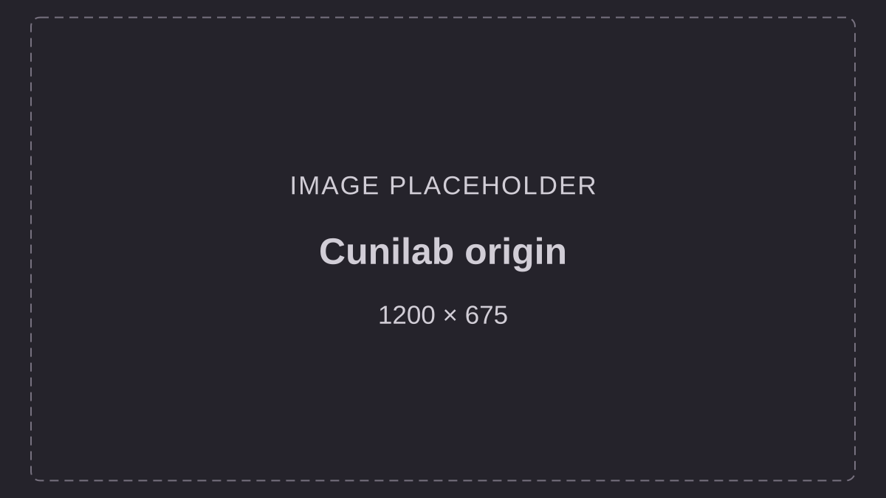

Arcane
Hidden or specialist knowledge. Here it represents discovery through inquiry and mastery, rather than claims of magic.
THE ORIGIN
Cunilab asks the questions. Arcane Warren explores the possibilities. Cairn preserves the journey.
Concept blueprint
THE NAME
Hidden or specialist knowledge. Here it represents discovery through inquiry and mastery, rather than claims of magic.
A connected network of rabbit burrows. It extends Cunilab's rabbit-hole metaphor into a place where many explorations meet.
Cunilab draws on the rabbit and underground tunnel imagery. The laboratory represents experimentation; the Warren represents collective exploration.
See the Cunilab ecosystem →THE CREED
Curiosity
Investigate before assuming. Make questions and uncertainty explicit.
Experimentation
Prefer a small testable hypothesis over an elaborate unverified plan.
Discovery
Return useful evidence, decisions and artifacts, not activity for its own sake.
Remembrance
Record failed approaches and context so others can learn.
Collectivity
Share relevant knowledge and coordinate across disciplines.
Human direction
Humans own intent, constraints, approvals and accountability.